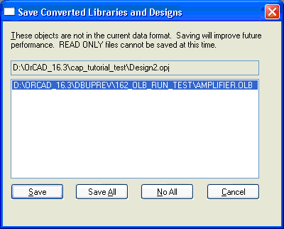

When you close a v16.3 project to which you have added one
or more v16.2 libraries, the application prompts you to
upgrade the added libraries.

Figure H-8
The Save Converted Libraries and Designs dialog displays
the list of all the v16.2 libraries.
Select specific libraries from the list and choose:
- Save to upgrade the selected libraries.
- Save All to upgrade all the listed libraries.
- No All to not upgrade any of the listed libraries.
|
|
|